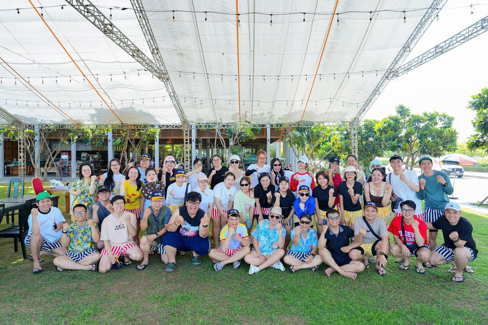
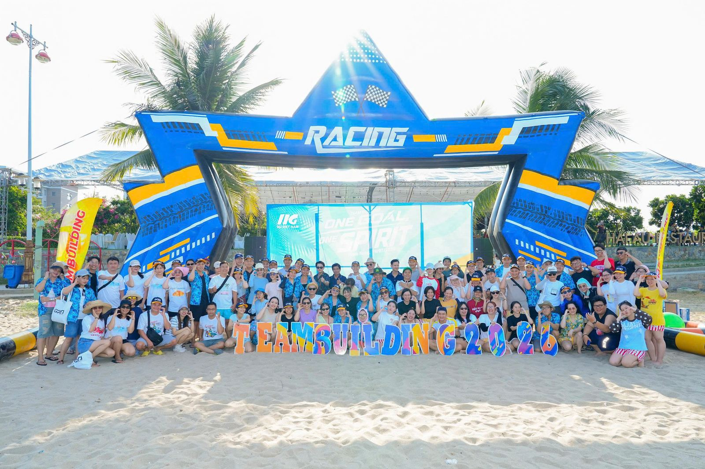
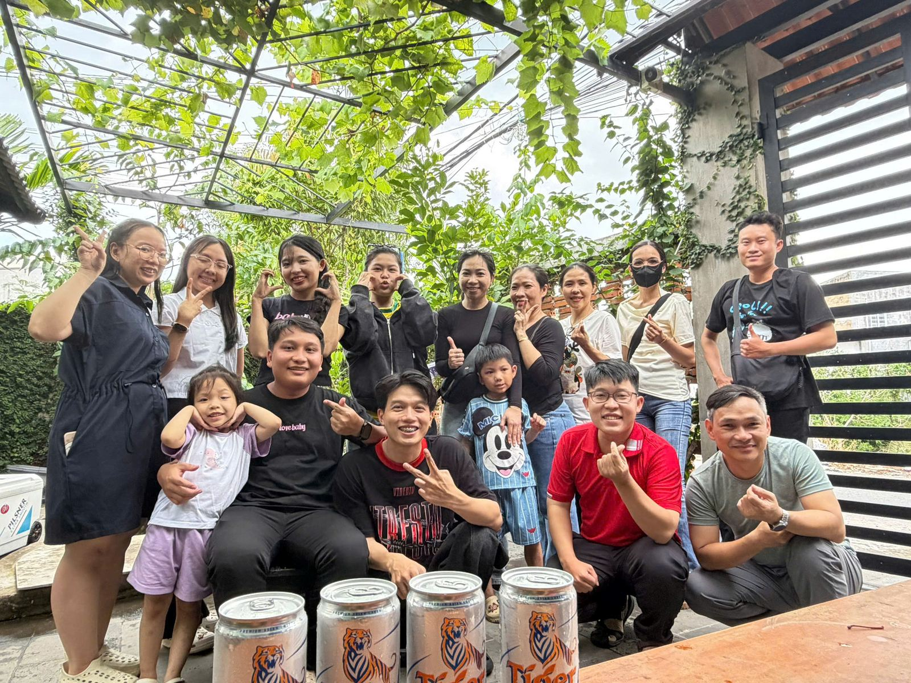
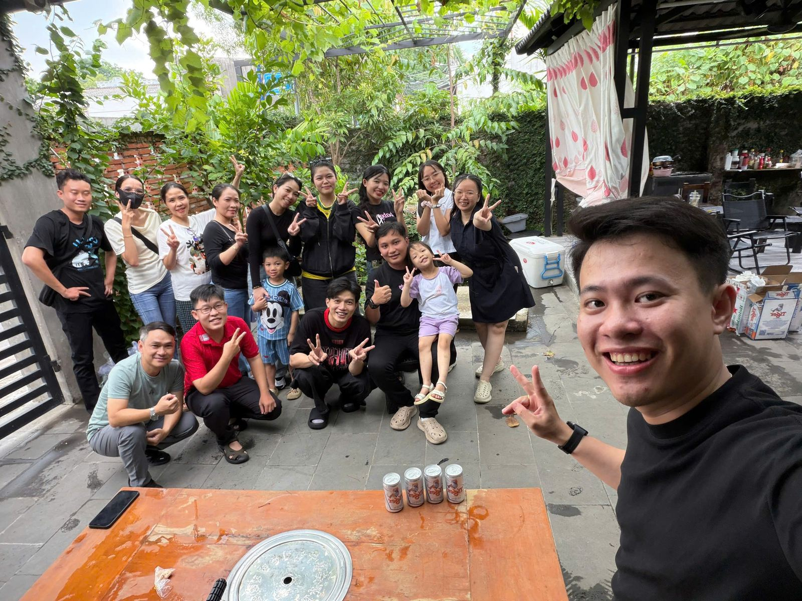

/ 01
Certiport / Pearson VUE — đứng tên Nguyễn Hoài Bảo (20 chứng chỉ).
Đăng nhập với tài khoản Giáo viên/Admin để đăng bài, thích và bình luận.
/ 02
Không chỉ code. Team building, gala, tất niên và vài chuyến đi cùng nhau ngoài giờ lên lớp.




Đăng nhập với tài khoản Giáo viên/Admin để đăng bài, thích và bình luận.